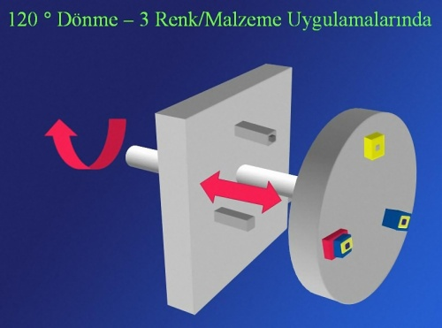
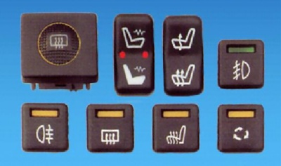
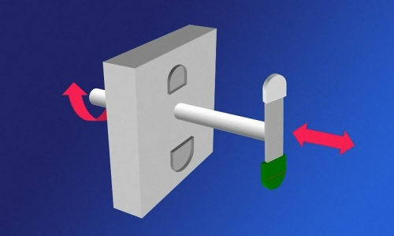
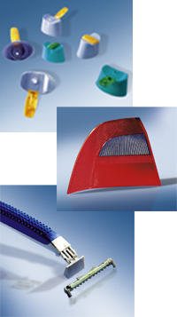
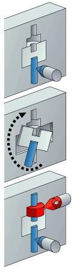
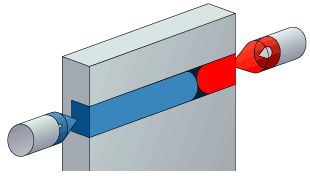

120° indeks plaka yöntemi döner tabla yönteminin diðer bir modelidir. 360°'de üç kez durduðundan dolayý genelde üç renkli parçalarda kullanýlan bir yöntemdir (6).


2.3. Döner çekirdek yöntemi
Kalýp gözlerinin her iki tarafýnda ayný geometrinin kullanýlmasý gereken uygulamalar için uygundur. Bu yöntem parça tasarýmýnda büyük bir serbestlik saðlar (6).



2.4. Düþey döndürme yöntemi
Ortadaki plaka grubunun kalýp boþluðu iki yöne de bakmaktadýr. Farklý malzemelerin ya da renklerin kullanýlabilmesi için birinci basýmda kullanýlan maçalar sayesinde kalýp 180° döndüðünde kapanma iþlemi gerçekleþir ve birinci basýmda maçalarýn boþ býraktýðý bölümler ikinci basýmda doldurulmaktadýr (6).
Transfer tekniðinde ilk kalýp gözüne basýlan geometri robot veya elle ikinci kalýp gözüne getirilmektedir. Her iki komponentin / malzemenin geometrisinde maksimum tasarým serbestliði vardýr (6).
Bu yöntemde her iki malzemede kalýp gözüne ayný anda basýlmaktadýr. Kalýp gözünün geometrisi ve yolluk giriþlerinin konumu malzemenin kalýp boþluðu içerisindeki daðýlýmýný belirler. Bu kalýplama yönteminde malzeme akýþýnýn kontrol edilememesi yöntemin en büyük dezavantajlarýndandýr (6).

2.7. Beraber enjeksiyon yöntemi (sandwich moulding):
Bu yöntem et kalýnlýðý ince olan parçalarda mükemmel bir proses kontrolü gerektirir. Özellikle merkezde geri dönüþtürülmüþ malzeme, dýþ yüzeyde kaliteli malzeme kullanýldýðý zaman çok verimlidir (6).
Sesi absorbe eden bir mekanizmaya sahip olduðu için ses yalýtýmýný saðlar,
Nitelikli özellikler üretebilmek için,
Maliyeti düþürmek için,
Yüzey kalitesi yüksek parçalar için,
Parçalarýn daha fazla güce dayanabilmelerini saðlar,
Bir çok özelliði ayný anda verebilmek için,
Geliþtirilmiþ estetik özelliklerin kazanýlmasý için,
Daha düþük iç kýsýn sýcaklýklarý için soðuma zamanýný azaltýr,
Geri kazanýlmýþ plastik parçalar parça çekirdeðinde kullanýlýr,
Hurdaya çýkmýþ parçalar eritilerek çekirdekte kullanýlabildiði için çevre dostudur. (6).
4. Ko enjeksiyon makineleri:
Ko enjeksiyon makineleri normal enjeksiyon makinelerinden farklýdýr. Farklý malzemeler ve farklý renkler kullanýldýðý için zamanlamalarý için basýnç ayarlayýcýlar, çok malzeme olduðu için birden fazla malzeme eritme deposu, basýnç gücü diðer enjeksiyon makinelerinden daha yüksek ve kalýplama tekniðine göre de makinelerinde ayrýca döner tablalarý barýndýrabilen makinelerdir (4).